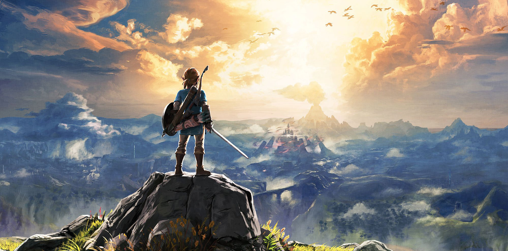

🎮 Mes jeux vidéo
← Retour à l'accueilAussi loin que mes souvenirs remontent, ou presque, je me rapelle avoir joué à des jeux vidéo, sous une forme ou une autre. Le tout premier a été Minion Rush, auquel je jouais sur ma tablette vers l'âge de 6 ans. Depuis il y en a eu de nombreux autres, mais voici ceux qui m'ont le plus transporté :
L'univers de Zelda ⚔️
En 2020, j'ai eu la chance d'avoir une Nintendo Switch pour mon anniversaire, et par la même occasion, de découvrir l'univers mystérieux de Zelda, à travers le jeu Breath of the Wild. Depuis, j'ai passé un nombre d'heures incalculable aux côtés de Link, dans le royaume d'Hyrule ; mes parents pourront en témoigner ! 😂
